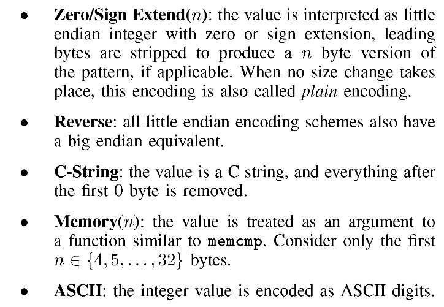
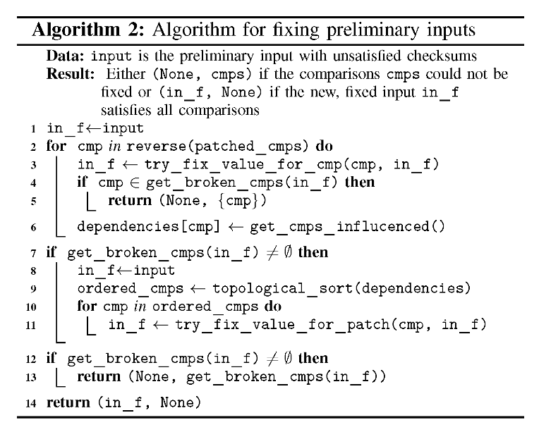

论文阅读笔记
总结近阶段学习情况
REDQUEEN
本文主要是提出了一种方法，用于解决类似魔术字节还有校验值比较的问题。使用的方法是输入到状态的对应，类似一个轻量级的污点追踪，为了解决前者使用了hook，不仅仅是比较指令还有函数调用(涉及内存和字符串比较)lea和减法相关的指令，解决后续问题主要采用了指令集的patch，等到无法增加代码覆盖率时再反推，判断是否可以修复这些patch从而解决一系列校验值比较问题。
Abstract
提出当今fuzz的缺陷，遇到checksum或者是magic num时bypass校验的效率不是很高。对于此类校验通常会去使用符号执行或者污点追踪引擎，但是这类工具通常会需要借助要源码或是指定操作系统，可移植性不好。
鉴于此，本文提出一种替代方案，称为redqueen。
INTRODUCTION
FUZZ近些年在学术界和工业界都取得了不错的影响力。这是目前测试程序安全性的一种常用手段。为了确保在实践中使用fuzz，通常需要极少的前置条件。但这与效率冲突。为了提高效率一般都需要一个不错的种子输入或者是需要一个格式生成器来帮助fuzzer学习输入的格式应该是什么样的。给予反馈的fuzzer就是如此，吧触发新状态的输入保存。以产生更多的测试用例。
常见的fuzz障碍
最常见的就是checksum和magicnum。忽略掉随机生成正确的种子的情况，基于反馈的fuzz基本不会产出正确的input来覆盖更多的代码，
1 | |
过去人们更倾向于使用高级的代码分析技术来解决此类问题，如污点追踪或是符号执行。（ANGORA和T-FUZZ）这类方法通常需要对环境有一个精确的描述如lib call的行为底层操作系统的行为以及平台所使用的指令集。因此很难再使用复杂指令集或是不常见的库和操作系统上使用。这类方法违背了afl设计的初衷。AFL的成功很大程度上是因为其对程序的假设很少，基于此我们提出了一种新型的fuzz方法，该类方法可用于任意目标来增加代码覆盖率。
输入到状态对应
这边讲了具体的实现，其实实现的方法很巧妙。。。主要原理是观察比较指令cmp这种。一般程序对输入都不会经过处理直接操作，比如与一些魔术字节相比较，字符串直接以小端序的形式存储在寄存器中。redqueen将其标记为污点，从而实现一个轻量级的污点追踪。
贡献
1.引入了输入到状态对应的概念来帮助fuzz
2.演示了该种概念的效果，可用于替代符号执行和污点追踪生成的种子可以覆盖更多的代码
3.该类方法被集成在REDQUEEN中
相关工作
介绍几类不同的fuzz的原理
1.符号执行
2.污点追踪
3.基于补丁
4.基于二进制文件
5.afl家族
实现
1 | |
面对如上魔术字节情况。普通的afl变异很难触发bug。目前能解决如上魔术字节问题的fuzz不是需要源码就是有很大的性能开销。
reqqueen是基于输入到状态对应的一种轻量级方法。以全自动的方式处理魔术字节。考虑到程序状态中的值通常直接对应于输入的部分这一事实。每次遇到新路径时，都会对比较指令进行跟踪，如果遇到不同参数的比较，通常会提取两个参数进行一个自定义的变异<pattern 7→ repl>.如下表所示。
| C-Code | u64(input) == u64(“MAGICHDR”) |
|---|---|
| Input | “TestSeedInput” |
| Observed (ASCII) | “deeStesT” == “RDHCIGAM” |
| Variations for < and > comparisons | “deeStesT” →“RDHCIGAL”, “deeStesT” →“RDHCIGAN” |
| Mutations after little-endian encoding | <“TestSeed” 7→ “MAGICHDR”> , <“TestSeed” 7→ “LAGICHDR”>, <“TestSeed” 7→ “NAGICHDR”> |
当对新输入进行模糊测试时，会挂钩所有比较指令并提取参数，此外还会挂钩所有的调用函数，因为部分函数也会实现一些比较功能如strcmp.
步骤见上表:
1.将TestSeedInput看做是input，比较指令会比较八个字节，字符串以小端序形式存储在寄存器中。所以看到的是“deeStesT” == “RDHCIGAM”
2.因为在运行时我们无法判断此次cmp是判断大于还是小于或是等于，所以还会对比较的值做一些变化，即加一和减一的操作(见表中的RDHCIGAL和RDHCIGAN)。正因此，redqueen还能帮助发现offbyone的bug。
3.当然需要考虑到大多数情况下输入都会经过一些处理如加密然后再进行比较，为了应对这类的操作，redqueen准备了不同的编码应用于变异，最常见就是就字节顺序转换。

4.应用。redqueen使用的是部分变异。如输入“TestSeedInput”时只有比较的前八个字节“TestSeed”才会被变异，新生成的testcase就是“MAGICHDRInput”
5.标记。用于解决候选input数量庞大的问题通常会采用一种“colored”copy，即随机。如input为“ZZZZZZZZZZZZZZZZZZZZZZZZZZZZZZZZ”时会得到ZZZZZZZZ 7→ MAGICHDR。这个变异可适用于24个不同的地方，为了解决这种问题，redqueen会在不改变代码覆盖率的情况下对输入进行一个变异，比如将其变异为“QYISLKFYDBYYSYWSIBSXEAXOKHNRUCYU”，这样得到的就是QYISLKFY 7→ MAGICHDR，仅有一处适用，候选的输入就降为了0。
6.字符串与内存。除了上述的一些比较，程序中还会出现一些通过调用函数来比较的方法，这时redqueen会hook函数调用，如果函数至少接受俩个参数，会提取其指向的前128个字节并将其视为整数。针对memcpy和strcmp类的函数还会采取不同的措施。
7.输入字典。
上述的都是针对魔术字节的一些处理方法，至于针对校验和。
1 | |
目前的很多方法像FLAYER T-FUZZ等。都是直接删除检查，如果有一些有趣的行为发生才会通过符号执行来想办法绕过检查。
这一部分可能有点难看懂，其实还是一种比较巧妙的方法，首先redqueen会识别到比较指令然后对其进行patch，比如patch成cmp ax,ax然后再次运行，如果产生了新的路径就会进入validation mode，在这个状态下会重复上述动作，如果没有新的状态就会取消上述patch。接着用类似magic bytes的方法，逆向着解决，如上图会先解决input [16]== ’R’ && input [17]== ’Q’接着解决u64 ( input +8)最后才是u64 ( input)
实施细节
基于KAFL，用相同的方式来获取代码覆盖率。此外会利用KVM-PT和QEMU-PT提供的VMI来插入断点来监视运行时的寄存器的值。
hook 比较指令
每次反汇编程序遇到一个类似比较的指令时都会保存其地址然后在下一次redqueen分析阶段就会就会进行hook。当进入分析时，断点被触发，参数被提取并保存到缓冲区中。值得注意的是，redqueen不仅hook cmp指令还会hook call指令和减法指令。前者是为了识别出内存和字符串比较，后者是编译器实现cmp的另一种写法，一般会用在switch中。也有时候会以另一种形式呈现比如lea或者是add一个复数。如果call指令的前俩个参数是一个正常的指针，redqueen就问认为这是个潜在的比较函数然后会吧参数指向的前128个字节dump出来。
着色标记
即在不改变程序执行路径（AFL bitmap）的情况下尽可能用随机值替换字符串。这增加了输入的熵，减少了候选的input数量可以很大程度的增加效率。
patch 指令
候选的哈希比较指令列表被计算出后就会对其进行patch，一般都会使用必真的比较指令如cmp al,al，其余的会用nop填充。当patch时，所新增的bitmap不会被添加到队列中。
输入验证和修复
算法如图

接下去就是讲解redqueen是否能解决这一系列问题和与其他工具比较效率咋样，这边就不多写了。